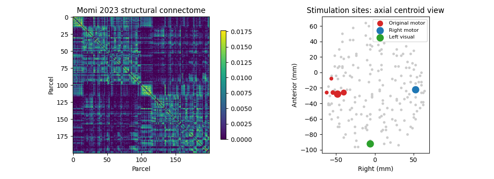
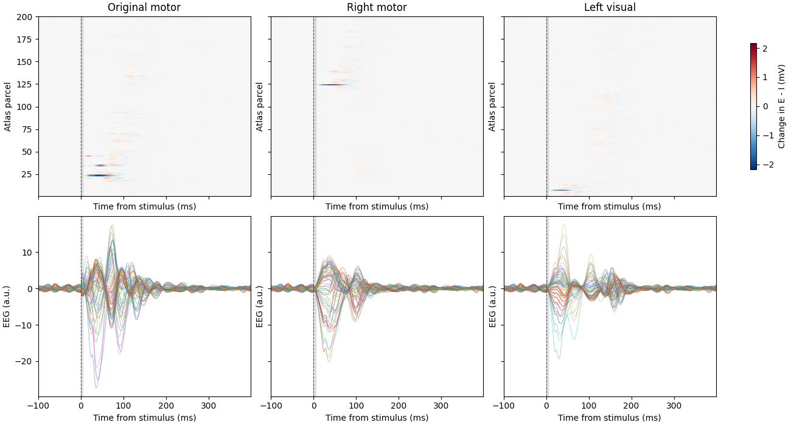
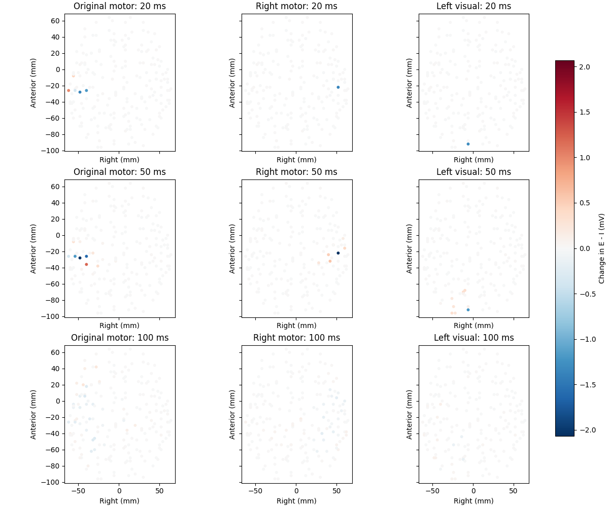
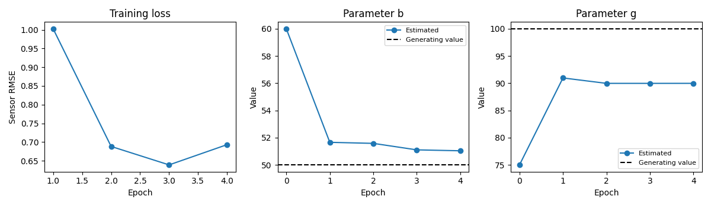
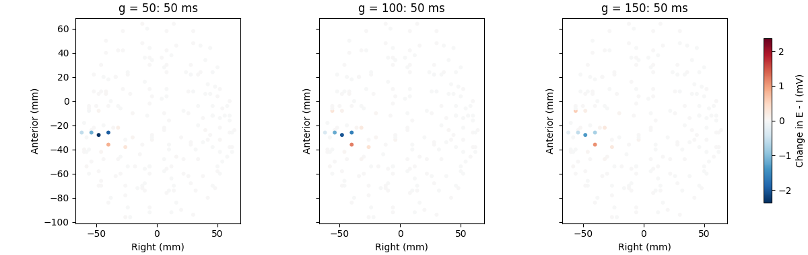

Note
Go to the end to download the full example code or to run this example in your browser via Binder.
Real connectome, synthetic EEG: stimulation, propagation, and fitting#
This follow-up to Getting started: simulate and fit a whole-brain model replaces random anatomy with the 200-region Schaefer connectome, tract distances, subject lead field, and original motor-cortex stimulation weights used in The Role of Recurrent Network Feedback in TMS-EEG Evoked Responses. It uses the current WhoBPyT Jansen-Rit implementation, not the paper’s archived implementation or previously fitted parameters.
We first stimulate the original motor target and alternative motor and visual targets, then vary coupling to explore spatiotemporal propagation. Finally, we generate synthetic EEG, estimate parameters from motor-site responses, and test the resulting model on held-out visual stimulation. No empirical EEG or published fit is downloaded or used as a fitting target.
Real anatomy does not make these simulations validated brain predictions. The neural parameters, short pulse, low noise, and fixed stimulation maps are controlled teaching choices, not a replication of the published study. This larger example takes several minutes on a CPU and downloads anatomy once into the standard WhoBPyT data cache.
1. Load anatomical inputs, not empirical EEG#
anatomy_only=True fetches five files: connectivity, tract distances,
subject 1’s lead field, the original stimulation weights, and the matching
Schaefer atlas names and centroids. Parcel order is shared across these
inputs. The group connectome and subject lead field are the combination
used in the original example, not a single participant’s complete anatomy.
from pathlib import Path
import matplotlib.pyplot as plt
import numpy as np
import pandas as pd
import torch
from whobpyt.datasets.fetchers import fetch_egmomi2023
from whobpyt.datatypes import Parameter as par, Timeseries
from whobpyt.models.jansen_rit import JansenRitModel, JansenRitParams
from whobpyt.optimization.custom_cost_JR import CostsJR
from whobpyt.run import ModelFitting
np.random.seed(42)
torch.manual_seed(42)
data_dir = Path(fetch_egmomi2023(anatomy_only=True))
sc = np.loadtxt(data_dir / 'Schaefer2018_200Parcels_7Networks_count.csv')
dist = np.loadtxt(data_dir / 'Schaefer2018_200Parcels_7Networks_distance.csv')
lm = np.load(data_dir / 'sub_1_leadfield', allow_pickle=False)
original_weights = np.load(data_dir / 'stim_weights.npy', allow_pickle=False)
atlas = pd.read_csv(
data_dir / 'Schaefer2018_200Parcels_7Networks_order_FSLMNI152_2mm.Centroid_RAS.txt')
labels = atlas['ROI Name'].str.strip().to_numpy()
coords = atlas[['R', 'A', 'S']].to_numpy(dtype=float)
n_nodes = len(labels)
n_chans = lm.shape[0]
assert sc.shape == dist.shape == (n_nodes, n_nodes)
assert lm.shape[1] == original_weights.size == n_nodes
assert np.array_equal(atlas['ROI Label'].to_numpy(), np.arange(1, n_nodes + 1))
assert all(np.isfinite(array).all() for array in [sc, dist, lm, original_weights])
sc = 0.5 * (sc + sc.T)
sc = np.log1p(sc) / np.linalg.norm(np.log1p(sc))
[1/1] Downloading Schaefer2018_200Parcels_7Networks_order_FSLMNI152_2mm.Centroid_RAS.txt
2. Choose stimulation targets in atlas space#
Start with the study’s distributed left-motor stimulation map, unchanged. For the alternative sites, choose the right somatomotor parcel nearest the mirrored original peak and a left visual parcel near posterior cortex. These single-parcel inputs are idealized perturbations, not modeled coil electric fields. Matching their L2 norm to the original map controls input energy, but does not equate neural recruitment across sites.
Change visual_coordinate or the site_weights dictionary to explore
other atlas locations. Indices in arrays are zero-based; printed atlas
parcel numbers are one-based.
motor_peak = int(np.argmax(original_weights))
mirrored_motor = coords[motor_peak] * np.array([-1, 1, 1])
right_motor_candidates = np.flatnonzero(
np.char.find(labels.astype(str), 'RH_SomMot') >= 0)
right_motor = right_motor_candidates[np.argmin(
np.linalg.norm(coords[right_motor_candidates] - mirrored_motor, axis=1))]
visual_coordinate = np.array([-15, -90, 0])
visual_candidates = np.flatnonzero(np.char.find(labels.astype(str), 'LH_Vis') >= 0)
visual_node = visual_candidates[np.argmin(
np.linalg.norm(coords[visual_candidates] - visual_coordinate, axis=1))]
site_weights = {'Original motor': original_weights.copy()}
for site, node in [('Right motor', right_motor), ('Left visual', visual_node)]:
weights = np.zeros(n_nodes)
weights[node] = np.linalg.norm(original_weights)
site_weights[site] = weights
for site, weights in site_weights.items():
peak_node = int(np.argmax(weights))
print(f'{site}: parcel {peak_node + 1}, {labels[peak_node]}')
fig, axs = plt.subplots(1, 2, figsize=(11, 4))
image = axs[0].imshow(sc, cmap='viridis')
axs[0].set(title='Momi 2023 structural connectome', xlabel='Parcel', ylabel='Parcel')
fig.colorbar(image, ax=axs[0], shrink=0.8)
axs[1].scatter(coords[:, 0], coords[:, 1], s=10, color='0.8')
site_colors = ['tab:red', 'tab:blue', 'tab:green']
for (site, weights), color in zip(site_weights.items(), site_colors):
selected = weights > 0
axs[1].scatter(coords[selected, 0], coords[selected, 1],
s=25 + 90 * weights[selected] / weights.max(),
color=color, label=site)
axs[1].set(title='Stimulation sites: axial centroid view',
xlabel='Right (mm)', ylabel='Anterior (mm)', aspect='equal')
axs[1].legend(fontsize=8)
fig.tight_layout()

Original motor: parcel 23, 7Networks_LH_SomMot_9
Right motor: parcel 124, 7Networks_RH_SomMot_9
Left visual: parcel 7, 7Networks_LH_Vis_7
3. Define a controlled whole-brain simulation#
Keep the three-population Jansen-Rit circuit, delayed anatomical coupling,
and lead-field observation model. As in the quick demo, moderate coupling
and low noise make the transient easy to inspect. These are not the
high-noise, high-gain fitted settings from the archived Momi implementation.
Only inhibitory rate b and global coupling g will be estimated;
fitting thousands of edges and lead-field entries would obscure this lesson.
The model interprets dist / mu as delays in output samples. At 1 kHz,
millimetre distances and mu=1.5 correspond to 1.5 mm/ms (1.5 m/s).
tr = 0.001
step_size = 0.0001
window_samples = 20
steps_per_sample = int(tr / step_size)
epoch_samples = 500
stim_onset = 100
pulse_samples = 5
times_ms = (np.arange(epoch_samples) - stim_onset) * tr * 1000
def make_model(fit=False, coupling=100):
"""Use fixed anatomy and two optional learnable neural parameters."""
params = JansenRitParams(
A=par(3.25), a=par(100), B=par(22),
b=par(60 if fit else 50, 55, 20, fit, asRand=False),
g=par(75 if fit else coupling, 90, 50, fit, asRand=False),
g_f=par(10), g_b=par(10),
std_in=par(0.5), mu=par(1.5), k=par(5),
cy0=par(50), y0=par(0), ki=par(np.ones((n_nodes, 1))), lm=par(lm),
)
return JansenRitModel(
params, node_size=n_nodes, output_size=n_chans,
TRs_per_window=window_samples, step_size=step_size, tr=tr,
sc=sc, dist=dist, lm=lm, use_fit_gains=False, use_fit_lfm=False)
def make_stimulus(weights):
"""Encode a spatially weighted five-millisecond pulse."""
stimulus = np.zeros((n_nodes, steps_per_sample, epoch_samples), dtype=np.float32)
stimulus[:, :, stim_onset:stim_onset + pulse_samples] = weights[:, None, None] * 100
return stimulus
def simulate(model, stimulus, seed=7):
"""Integrate after settling, using a local RNG for reproducible comparisons."""
windows = {name: [] for name in ['eeg', 'E', 'I']}
with torch.no_grad(), torch.random.fork_rng(devices=[]):
torch.manual_seed(seed)
state = torch.zeros(n_nodes, 6)
history = torch.zeros(n_nodes, max(500, int(dist.max() / 1.5) + 1))
resting = torch.zeros(n_nodes, steps_per_sample, window_samples)
for _ in range(100):
output, history = model(resting, state, history)
state = output['current_state']
for start in range(0, stimulus.shape[-1], window_samples):
external = torch.as_tensor(stimulus[:, :, start:start + window_samples])
output, history = model(external, state, history)
state = output['current_state']
for name in windows:
windows[name].append(output[name].numpy())
recording = {name: np.concatenate(parts, axis=1) for name, parts in windows.items()}
recording['source'] = recording['E'] - recording['I']
return recording
def baseline(data):
"""Baseline correction for displaying each individual epoch."""
return data - data[:, :stim_onset].mean(axis=1, keepdims=True)
def rms(data):
return np.sqrt(np.mean(data ** 2, axis=0))
def mark_stimulus(ax):
ax.axvspan(0, pulse_samples, color='0.5', alpha=0.2)
ax.axvline(0, color='0.3', lw=0.8, ls='--')
ax.set(xlabel='Time from stimulus (ms)', xlim=(times_ms[0], times_ms[-1]))
4. Forward simulations: change the stimulation site#
No optimization takes place here. Each site receives the same pulse timing and input norm, with identical initial conditions and random-number streams. Differences therefore come from the intervention location and network dynamics, rather than a different noise realization. Heatmaps retain atlas parcel order and share a symmetric colour scale.
reference_model = make_model()
stimuli = {site: make_stimulus(weights) for site, weights in site_weights.items()}
responses = {site: simulate(reference_model, stimulus) for site, stimulus in stimuli.items()}
source_limit = max(np.abs(baseline(recording['source'])).max()
for recording in responses.values())
fig, axs = plt.subplots(2, 3, figsize=(13, 7), sharex=True, sharey='row',
layout='constrained')
for column, (site, recording) in enumerate(responses.items()):
source = baseline(recording['source'])
image = axs[0, column].imshow(
source, origin='lower', aspect='auto', cmap='RdBu_r',
vmin=-source_limit, vmax=source_limit,
extent=[times_ms[0], times_ms[-1], 0.5, n_nodes + 0.5])
axs[0, column].set(title=site, ylabel='Atlas parcel')
axs[1, column].plot(times_ms, baseline(recording['eeg']).T, lw=0.6, alpha=0.5)
axs[1, column].set(ylabel='EEG (a.u.)')
for row in range(2):
mark_stimulus(axs[row, column])
fig.colorbar(image, ax=axs[0].tolist(), label='Change in E - I (mV)', shrink=0.7)

5. Forward simulations: vary coupling and measure propagation#
Sweep global coupling while holding the original motor input fixed. Compare sensor GFP with source activity in parcels receiving no direct input. This separates network propagation from direct recruitment. The early (10-100 ms) and late (100-300 ms) summaries are descriptive windows, not claims about the origins of particular human TEP components.
coupling_values = [50, 100, 150]
undriven = original_weights == 0
early = (times_ms >= 10) & (times_ms < 100)
late = (times_ms >= 100) & (times_ms < 300)
sweep = {}
fig, axs = plt.subplots(1, 2, figsize=(11, 3.8))
for coupling in coupling_values:
recording = simulate(make_model(coupling=coupling), stimuli['Original motor'])
sweep[coupling] = recording
propagated = rms(baseline(recording['source'])[undriven])
axs[0].plot(times_ms, rms(baseline(recording['eeg'])), label=f'g = {coupling}')
axs[1].plot(times_ms, propagated, label=f'g = {coupling}')
print(f'g={coupling}: undriven-parcel RMS, '
f'early={propagated[early].mean():.4f}, late={propagated[late].mean():.4f} mV')
axs[0].set(title='Sensor global field power', ylabel='GFP (a.u.)')
axs[1].set(title='Propagation beyond directly stimulated parcels', ylabel='Source RMS (mV)')
for ax in axs:
mark_stimulus(ax)
ax.legend(fontsize=8)
fig.tight_layout()

g=50: undriven-parcel RMS, early=0.0451, late=0.0208 mV
g=100: undriven-parcel RMS, early=0.0622, late=0.0216 mV
g=150: undriven-parcel RMS, early=0.0660, late=0.0195 mV
6. Fit synthetic motor responses, not empirical recordings#
Build one continuous synthetic experiment with an original-motor epoch
followed by a right-motor epoch. Simulating the full sequence preserves
any inter-epoch carryover; do not concatenate independently reset targets
and pretend they form a continuous recording. ki is fixed to one and
the spatial weights are encoded in u, so the same model can handle
multiple intervention sites without fitting their stimulation maps.
Only these motor responses reach the optimizer. Visual stimulation is
excluded entirely. Training uses the raw sensor time series, not GFP,
selected peaks, baseline-corrected displays, or hidden source activity.
The priors are deliberately broad and offset from the generating values;
they do not specify the exact answer. lr_2ndLevel=0 holds those priors
fixed instead of learning their precision during this short demonstration.
EEG uses the same arbitrary observation scale as the quick demo; data
scaling matters when balancing time-series error against prior penalties.
Four epochs illustrate the procedure,
not a thorough convergence or parameter-identifiability analysis.
training_sites = ['Original motor', 'Right motor']
training_stimulus = np.concatenate([stimuli[site] for site in training_sites], axis=-1)
training_target = simulate(reference_model, training_stimulus, seed=17)
synthetic_recording = Timeseries(training_target['eeg'], tr)
model = make_model(fit=True)
initial_parameters = {name: getattr(model.params, name).value().item() for name in ['b', 'g']}
initial_predictions = {site: simulate(model, stimulus, seed=19)
for site, stimulus in stimuli.items()}
np.random.seed(52)
torch.manual_seed(52)
fit = ModelFitting(model, CostsJR(model))
fit.train(u=training_stimulus, empRecs=[synthetic_recording],
num_epochs=4, TPperWindow=window_samples, warmupWindow=50,
learningrate=0.5, lr_2ndLevel=0.0)
fig, axs = plt.subplots(1, 3, figsize=(12, 3.5))
axs[0].plot(np.arange(1, len(fit.trainingStats.loss) + 1), fit.trainingStats.loss, 'o-')
axs[0].set(title='Training loss', xlabel='Epoch', ylabel='Sensor RMSE')
for ax, name, generating in zip(axs[1:], ['b', 'g'], [50, 100]):
values = np.concatenate([[initial_parameters[name]],
np.asarray(fit.trainingStats.fit_params[name]).ravel()])
ax.plot(np.arange(len(values)), values, 'o-', label='Estimated')
ax.axhline(generating, color='black', ls='--', label='Generating value')
ax.set(title=f'Parameter {name}', xlabel='Epoch', ylabel='Value')
ax.legend(fontsize=8)
fig.tight_layout()

Epoch: 0
epoch: 0 loss: 0.5500078 Pseudo FC_cor: 0.9756119360370229 cos_sim: 0.9850723070381481
Epoch: 1
epoch: 1 loss: 0.3437859 Pseudo FC_cor: 0.9929990655485844 cos_sim: 0.990049862935457
Epoch: 2
epoch: 2 loss: 0.5977655 Pseudo FC_cor: 0.9929749910149381 cos_sim: 0.9900589000861576
Epoch: 3
epoch: 3 loss: 0.41942266 Pseudo FC_cor: 0.9927697053864243 cos_sim: 0.9881645340095884
7. Evaluate full propagation patterns and a held-out site#
Simulate fresh predictions for all three sites without updating parameters. Target responses and predictions have different input-noise realizations; before/after predictions use the same seed to isolate the effect of fitting. Each comparison includes every sensor and every poststimulus sample. Normalized RMSE divides error RMS by target RMS; lower is better. Correlation compares the flattened channel-by-time pattern, retaining sign, rather than only the shape of GFP. It can be high despite amplitude errors, so inspect both measures.
Because the targets are simulated, we can also evaluate hidden source propagation in parcels that were not directly stimulated. This diagnostic is not available as ground truth when fitting real sensor recordings.
fitted_predictions = {site: simulate(model, stimulus, seed=19)
for site, stimulus in stimuli.items()}
def pattern_error(prediction, target):
"""Normalized error over the complete baseline-corrected poststimulus pattern."""
prediction = baseline(prediction)[:, stim_onset:]
target = baseline(target)[:, stim_onset:]
return np.sqrt(np.mean((prediction - target) ** 2) / np.mean(target ** 2))
metrics = []
fig, axs = plt.subplots(2, 3, figsize=(13, 7), sharex=True, sharey='row',
layout='constrained')
for column, (site, target) in enumerate(responses.items()):
before = initial_predictions[site]
after = fitted_predictions[site]
remote = site_weights[site] == 0
target_pattern = baseline(target['eeg'])[:, stim_onset:].ravel()
after_pattern = baseline(after['eeg'])[:, stim_onset:].ravel()
metrics.append({
'Site': site,
'Role': 'Training' if site in training_sites else 'Held out',
'EEG NRMSE before': pattern_error(before['eeg'], target['eeg']),
'EEG NRMSE after': pattern_error(after['eeg'], target['eeg']),
'EEG pattern correlation': np.corrcoef(target_pattern, after_pattern)[0, 1],
'Remote source NRMSE before': pattern_error(before['source'][remote], target['source'][remote]),
'Remote source NRMSE after': pattern_error(after['source'][remote], target['source'][remote]),
})
for recording, color, style, label in [
(target, 'black', '-', 'Synthetic target'),
(before, '0.5', '--', 'Before fitting'),
(after, 'tab:red', '-', 'After fitting')]:
axs[0, column].plot(times_ms, rms(baseline(recording['eeg'])),
color=color, ls=style, label=label)
axs[1, column].plot(times_ms, rms(baseline(recording['source'])[remote]),
color=color, ls=style, label=label)
role = 'training site' if site in training_sites else 'HELD OUT'
axs[0, column].set(title=f'{site}: {role}', ylabel='Sensor GFP (a.u.)')
axs[1, column].set(ylabel='Undriven-parcel source RMS (mV)')
for row in range(2):
mark_stimulus(axs[row, column])
axs[row, column].legend(fontsize=7)
metrics = pd.DataFrame(metrics).set_index('Site')
print(metrics.round(3).to_string())
print('Generating parameters: b=50, g=100')
print('Estimated parameters:',
{name: round(getattr(model.params, name).value().item(), 3) for name in ['b', 'g']})

Role EEG NRMSE before EEG NRMSE after EEG pattern correlation Remote source NRMSE before Remote source NRMSE after
Site
Original motor Training 0.360 0.214 0.979 0.436 0.357
Right motor Training 0.383 0.264 0.966 0.558 0.506
Left visual Held out 0.387 0.309 0.954 0.575 0.528
Generating parameters: b=50, g=100
Estimated parameters: {'b': 51.036, 'g': 89.979}
Inspect the signed held-out spatiotemporal response directly. A GFP match alone could hide wrong sensor polarities or spatial patterns. The maps below share an amplitude scale and show every channel, including the residual rather than only a selected successful trace.
The short fit improves predictions without exactly recovering the generating parameters: coupling can remain near its prior mean even while sensor-pattern correlation is high. Residual source error and parameter bias are reasons to explore additional interventions, longer fits, and alternative priors, not to claim unique parameter recovery.
held_out = 'Left visual'
held_target = baseline(responses[held_out]['eeg'])
held_prediction = baseline(fitted_predictions[held_out]['eeg'])
sensor_limit = np.abs(held_target).max()
fig, axs = plt.subplots(1, 3, figsize=(13, 3.8), sharex=True, sharey=True,
layout='constrained')
for ax, values, title in zip(
axs, [held_target, held_prediction, held_prediction - held_target],
['Held-out synthetic target', 'Prediction after motor-site fitting', 'Prediction minus target']):
image = ax.imshow(values, origin='lower', aspect='auto', cmap='RdBu_r',
vmin=-sensor_limit, vmax=sensor_limit,
extent=[times_ms[0], times_ms[-1], 0.5, n_chans + 0.5])
ax.set(title=title, ylabel='EEG channel')
mark_stimulus(ax)
fig.colorbar(image, ax=axs.tolist(), label='Baseline-corrected EEG (a.u.)', shrink=0.8)

Further experiments and limitations#
Add atlas-selected targets to
site_weightsand retain a separate held-out set. To estimate from another site’s response, add that site totraining_sitesand regenerate the continuous synthetic experiment.Expand
coupling_valuesor vary synaptic rates to ask which parts of the early/late propagation change. A larger response is not necessarily more spatially widespread; inspect the source maps and undriven parcels.Repeat fits from several starting points and with multiple independent noise seeds. Similar EEG fits need not imply unique neural parameters.
Compare against shuffled-connectome or delayed-feedback interventions before attributing a particular component to recurrent propagation.
Successful prediction here is a within-model synthetic recovery exercise: generator and fitted model share equations, anatomy, and observation model. It does not validate those assumptions against human data. The empirical workflow and published recurrent-feedback analyses are in The Role of Recurrent Network Feedback in TMS-EEG Evoked Responses.
Reference: Momi D, Wang Z, Griffiths JD (2023), TMS-evoked responses are driven by recurrent large-scale network dynamics, eLife 12:e83232. https://doi.org/10.7554/eLife.83232
Total running time of the script: (3 minutes 58.987 seconds)